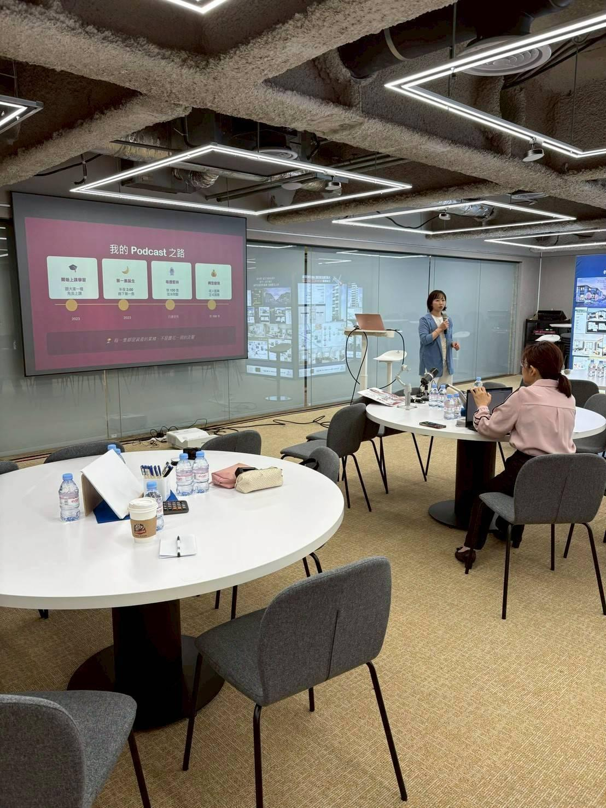
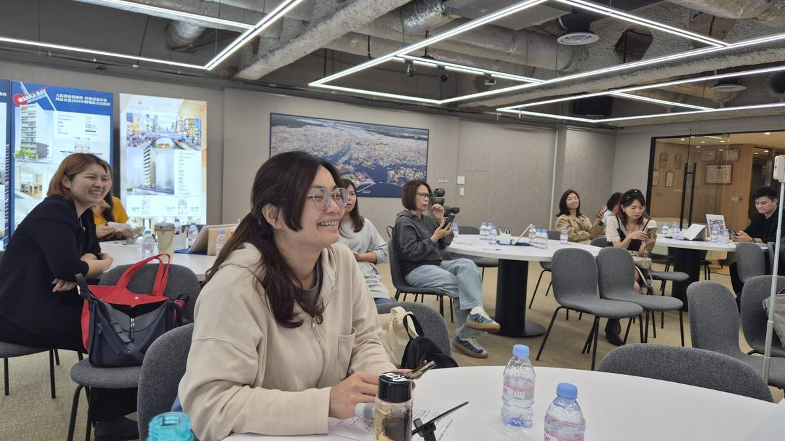
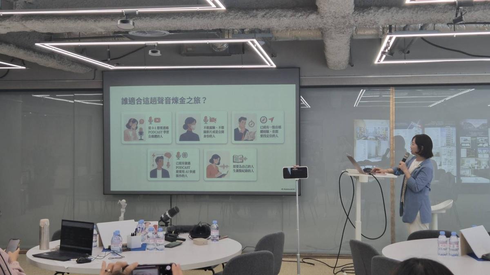
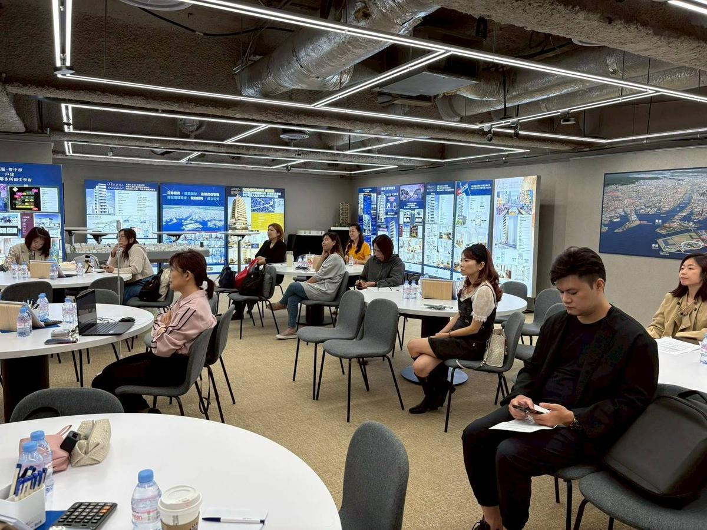

一支手機，四個週六
從零開始打造聲音個人品牌
你有滿腹的專業知識與人生故事
卻因為「不會技術、沒有設備、沒有時間」
讓這一切永遠鎖在筆記本裡？
現在，讓 AI 幫妳——是時候讓世界聽見妳的聲音。
你是不是也有這些困擾
剪輯、設備、上架——光想到這些就頭痛，打開電腦就卻步，最後什麼都沒開始。
工作、家庭已經夠忙了，一集 Podcast 要花 20 小時？根本不可能持續。
面對麥克風腦袋一片空白，不知道說什麼好，擔心自己說的沒有人想聽。
6 / 27 工作坊現場




2026 年 6 月 27 日・AI Podcast 聊天煉金術工作坊・南京復興站
學員真實成果
這些都是真實學員上完課後製作的 Podcast 節目封面。
從零開始，到有自己的節目在全球平台上架——妳也可以。
以上均為學員自主創建的 Podcast 節目・已在 Spotify / Apple Podcasts 等平台上架
真實學員回饋
以下均為學員課後主動分享的真實回饋，截圖已遮蔽個人隱私資訊
謝謝老師用心的教學，讓我們快速進入製作、錄製、剪輯、上架 Podcast。超棒的！
竟然在一個月內完成上架，真是超乎意料之外！謝謝老師與大家的陪伴！
我在荷蘭也準時更新上架了 Ep7！歡迎大家收聽！
這是我的 Podcast 老師，她的課含金量高。上完 4 次課，就讓我可以做出自己的 Podcast 節目。超級推薦給想做 Podcast 的朋友們！
短短 4 堂課就帶領我從小白到完成第一集上架！老師的引導讓我從一開始的緊張，到後來完全開啟「聊天模式」，聊到欲罷不能。
從 0 到 1，原來 Podcast 沒那麼遠。跟著 Jean 芳棠老師，一步步打開了 Podcast 的世界。老師甚至無私分享實用指令，讓每個人都能快速打造自己的節目雛形。
課程內容
找到妳無法被取代的聲音定位與目標聽眾。用一張九宮格，把二十年的人生智慧，變成清晰的節目藍圖。
把 AI 訓練成你的節目企劃助理，腳本生成效率提升 80%，靈感永不枯竭。從此告別「不知道說什麼」。
在家用手機錄出錄音室音質，並用 Descript 像改作文一樣完成剪輯，後製時間大幅縮短。
實機操作上架 Spotify、Apple Podcast 等全球平台，並制定妳專屬的變現路徑——廣告置入、會員訂閱、課程轉化。
課程規格
每週六・下午 2:00–4:00
7/11、7/18、7/25、8/1
共四堂・每堂約 2 小時
台北市許昌街 42 號 8 樓
萊客商務中心
（台北車站步行 3 分鐘）
實體課程同步線上直播
無論妳在哪裡都能跟上
每堂課均提供補課機制
臨時有事不用擔心
完整 AI Podcast 工作流
課後帶走、永久使用
加入 MissBoss 學員社群
芳棠老師親自回覆
ABOUT YOUR GUIDE
《芳齡在線》Podcast 主持人・MissBoss 創辦人
兩岸媒體行銷超過十年以上資歷，入圍第四屆海外華文媒體報導大獎，知名電視台節目企劃／主持人，旅遊集團海外派駐資深行銷主管。
主持《芳齡在線》Podcast，已累積 150+ 集，親身實踐 AI 工作流，把單集製作從 20 小時壓縮到 2 小時。陪伴 100+ 熟齡女性企業家建立個人品牌。
真實製作・不是示範
芳棠老師自身也在持續產出，帶著真實的 Podcast 製作經驗陪伴妳走完全程
✦ 限額早鳥優惠 ✦
常見問題
四個週六，讓 20 年的智慧開始造血
早鳥名額有限，7 月 31 日截止
✦ 立即報名 ✦
每週六・下午 2:00–4:00 ｜ 7/11 開課・早鳥 NT$4,980
填寫完成後，資料將直接存入我們的系統
24 小時內以 Email 確認並提供付款方式